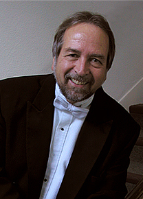

Dr. Axel Theimer
Dr. Axel Theimer (born March 10, 1946) is a conductor, composer, singer, author and professor at the College of Saint Benedict / Saint John's University (CSB/SJU) in Minnesota. He conducts the professional a cappella choir Kantorei (Minneapolis / Saint Paul), the National Catholic Youth Choir and the Amadeus Chamber Symphony, and is currently in his 44th year as a music faculty member at CSB/SJU, where he conducts CSB/SJU Chamber Choir and the SJU Men's Chorus. He is on the faculty and is executive director of the VoiceCare Network. He is an acknowledged expert on healthy vocal production for solo and choral singing, and the effect of conducting gesture on vocalists and instrumentalists. His choirs are known and praised for their particularly warm, natural, expressive and efficient sound.
Violin I
Marion Judish, Concertmaster
Kristen Bauer
Laura Dahl
Robin Gotta
Beverley Williams
Laura Wolfram
Violin II
Susan Dubin, Principal
Tyler Gaeth
Jim Johnson
Linda Peck
Jeanie Schoephoerster
John Sinko
Viola
Cecilia Diffley, Principal
Andrea Hathaway
Kim Schmitt
Cello
Bryant Julstrom, Principal
Steven Eckblad
Rebekah Goldstein
Marianne Zitzewitz
Bass
Don Neu
Patrick Dinndorf
Flute
Joey Hillesheim
Jennifer Kelley
Oboe
Dierdre Harkins
Therese Powell
Cara Sandquist
Clarinet
Tom Gaetz
R. Dennis Layne
Bassoon
Maia Hamann
French Horn
Terri Deming
Louise Clinton
Trumpet
Richard Witteman
Sean Jacobson
Timpani
Will White